Eventra — organizer feedback review
Reviewed 18 October 2026 · Source: FB Eventra.xlsx · Worksheet: Suivi des Retours
Evidence and scope
This is an interpretation and acceptance-check review. No application behavior or production data was changed. Local source inspection is identified separately from reported behavior; no deployed reproduction, authenticated two-account test, or email-delivery test has been performed.
- 12 feedback records, all marked Nouveau: 5 Critique, 6 Haute, 1 Moyenne. Categories: 3 Bug / Anomalie and 9 Amélioration. These are the organizer's original classifications.
- Dates decode to 12 October 2026 (FB-01–03), 14 October (FB-04–07), and 16 October (FB-08–12).
- 12 distinct embedded PNG files, placed 14 times. image7.png is repeated as image9.png; image6.png is repeated as image3.png. No separate Excel comment/thread parts, hidden worksheets, or hidden rows were found.
- Images float across row boundaries, including offsets that place them below their anchor row. Associations use both placement and subject matter. Uncertain associations are explicitly described. In particular, FB-08 and FB-10 have no dedicated image, and FB-09 reuses a slot image.
- The dashboard's average rating and average delay cells G5:H5 share IFERROR(AVERAGE(#REF!), 0). Their displayed zeroes mask broken references and are not reliable measurements. The 12-record and status totals were checked independently against the actual entries.
Review decisions with the largest effect
- FB-01: define event B2B eligibility and how guest accounts should be treated.
- FB-03 / FB-05: identify the exact failing messaging action and expected notification triggers/recipients.
- FB-04: confirm whether this event should permit in-person meetings only; verify its organizer schedule separately.
- FB-07 / FB-09: agree how pending requests, participant availability, confirmed bookings, and venue capacity interact.
- FB-08: define cancellation permissions for each meeting state and participant role.
- FB-11 / FB-12: confirm where business links belong and whose personal profile should appear on a business page.
Proposed checks below are a future verification checklist, not tests already passed. References are copied directly from the workbook at their original resolution.
FB-01 · Show eligible B2B participants in networking
Workbook row 8 · Amélioration · Priority: Haute · Status: Nouveau
c inutile dafficher des profils non ouverts au B2B dans le champ d réseautage
- Our interpretation
- The networking directory should exclude people who are not open or eligible for B2B networking.
- What the reference establishes
- The directory shows 94 participants, including cards marked Guest User with disabled meeting/message actions. This demonstrates unusable cards, but Guest User and a deliberate B2B opt-out are different states.
- Decisions / missing details
- Clarify eligibility: event registration B2B opt-in, global networking preference, account activation, or a combination. Determine whether the general attendee directory should remain broader than networking.
- Local source cross-check
- src/lib/eventNetworkingParticipants.ts already filters registration b2bOptIn=true and excludes explicit b2b_enabled=false. src/pages/EventSectionPage.tsx also contains the Guest User card UI. Different directory entry points require comparison; the feedback is not proof that every current path is unfiltered.
Proposed acceptance checks
- Opted-out people are excluded from the networking results, filters, search, and counts.
- Eligible opted-in participants remain discoverable. Apply the agreed handling of guests and missing preferences consistently.
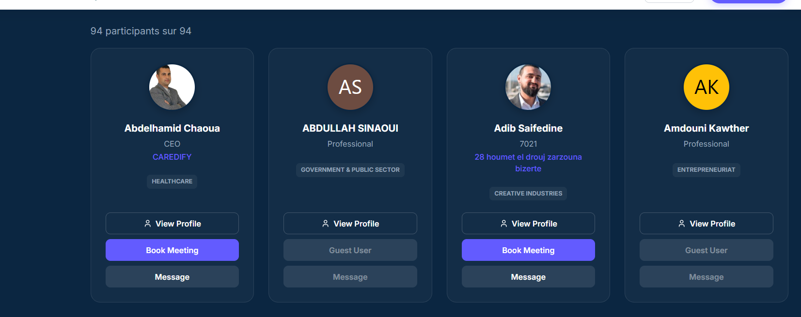
image7.png — click for original sizeFB-02 · Activity statistics do not update
Workbook row 16 · Amélioration · Priority: Moyenne · Status: Nouveau
ya pas un changement des stats
- Our interpretation
- Activity totals should reflect actual user activity consistently on the private and public profile.
- What the reference establishes
- Two images show zero counters: events attended, B2B meetings, connections, profile views; the public activity panel also shows zero views/connections. Static screenshots cannot establish which action failed to update a counter.
- Decisions / missing details
- Define each metric: registration versus actual attendance; requested versus confirmed versus completed meetings; accepted connections; unique versus total profile views and whether self-views count. Agree update timing and event/global scope.
- Local source cross-check
- src/pages/09_My_Profile.tsx:820-825 reads stored profile counters with zero fallbacks. src/pages/PublicProfilePage.tsx reads profile.profile_views. This confirms the display source, not a failure in the counter update pipeline.
Proposed acceptance checks
- Perform one qualifying action per agreed metric and compare source records with both displayed panels.
- Refresh and sign in again; counters persist, agree across panels, and avoid duplicate counting.
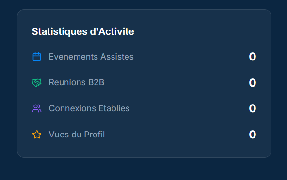
image2.png — click for original size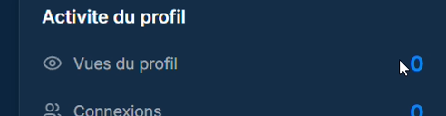
image13.png — click for original sizeFB-03 · Messaging malfunction
Workbook row 31 · Bug / Anomalie · Priority: Critique · Status: Nouveau
dysfonctionnement ds la fonctionnalité de messagerie
- Our interpretation
- Messaging must work when started from a person or business, with the correct recipient and visible conversation history.
- What the reference establishes
- The nearby company image shows Contacter l'entreprise. The other screenshot shows empty conversation previews and an active system@eventra.local conversation. The company-to-messaging connection is inferred from placement and context; the precise failing action is not supplied.
- Decisions / missing details
- Identify the entry point and exact symptom: contact button, wrong recipient, send failure, missing received message, or missing history. system@eventra.local is visible but its cause is unknown.
- Local source cross-check
- src/components/business/BusinessProfilePage.tsx:204-215 contacts owner_profile_id through getOrCreateThread. src/components/messaging/UserMessagesCenter.tsx and src/hooks/useMessageThread.ts own conversation behavior. These are investigation paths, not a confirmed root cause.
Proposed acceptance checks
- Use two distinct accounts to start a thread, send and reply, and verify history after reload.
- From a company contact action, resolve the intended company contact and open that conversation without creating a duplicate or unrelated recipient.
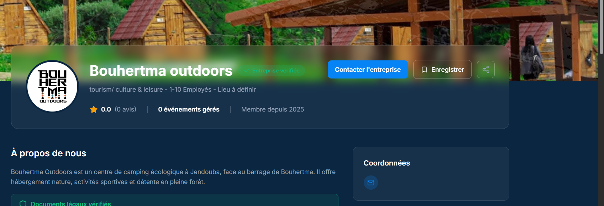
image10.png — click for original size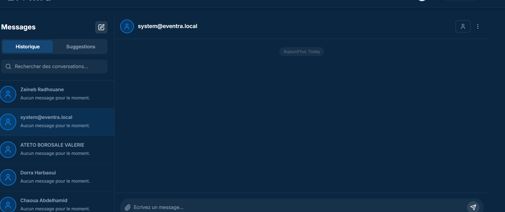
image14.png — click for original sizeFB-04 · In-person-only meetings for this event?
Workbook row 41 · Amélioration · Priority: Critique · Status: Nouveau
meeting just "in person"
- Our interpretation
- Likely request: offer only in-person meetings for this event. The short wording does not establish whether this is a restriction request or a complaint that only in-person works.
- What the reference establishes
- The modal visibly offers Online, In-person, and Hybrid, with In-person selected. It also says No networking schedule configured by organizer and displays Please select a time slot.
- Decisions / missing details
- Confirm the intended event formats and scope: this event or platform-wide. Separately verify organizer schedule configuration; changing available formats alone would not resolve the missing schedule.
- Local source cross-check
- src/components/networking/BookMeetingModal.tsx:538-541 lists all three formats. Its non-video scheduling UI depends on venueConfig; the missing-schedule text is present at line 598.
Proposed acceptance checks
- For this event, display and accept only the agreed formats across booking entry points.
- Configured dates and slots appear, a valid in-person request succeeds, and a missing schedule gives an actionable explanation.
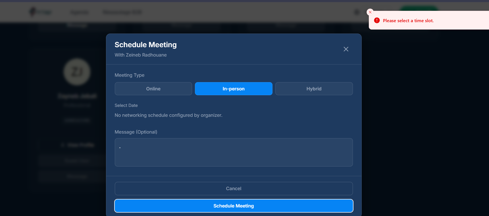
image11.png — click for original sizeFB-05 · Missing platform and email notifications
Workbook row 49 · Bug / Anomalie · Priority: Critique · Status: Nouveau
pas de notif ni sur la platform ni par mail
- Our interpretation
- Users report receiving neither an in-app notification nor an email for an expected activity.
- What the reference establishes
- The image shows an empty notification dropdown: No notifications yet. It does not show email delivery or identify the triggering activity.
- Decisions / missing details
- Identify which triggers and recipients are affected: message, meeting request, acceptance, reschedule, cancellation, or connection. Agree which events should produce both channels.
- Local source cross-check
- Notification-related entry points include src/lib/notifications.ts, src/hooks/useNotifications.ts, src/components/navigation/NotificationsDropdown.tsx, and meeting/message actions. Existing send calls do not prove successful persistence or delivery.
Proposed acceptance checks
- For each agreed trigger, verify the correct recipient sees one persisted notification and a working destination link.
- Verify email generation and delivery outcome separately from database insert or provider acceptance; check both accounts and notification preferences.
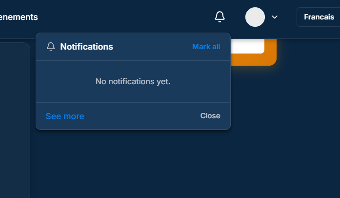
image4.png — click for original sizeFB-06 · Open the other person's profile from messaging
Workbook row 57 · Bug / Anomalie · Priority: Critique · Status: Nouveau
impossible d'acceder au profil
- Our interpretation
- The profile icon in a conversation should open the conversation partner's profile.
- What the reference establishes
- An arrow explicitly points to the person/profile icon at the top right of a conversation with Test Test.
- Decisions / missing details
- The target is clear. Verify the route and visibility rules for that conversation partner, including missing or unavailable profiles.
- Local source cross-check
- Confirmed local code mismatch: src/components/messaging/UserMessagesCenter.tsx:294-296 handleViewProfile unconditionally navigates to /my-profile; line 893 binds the conversation icon to that handler. Deployed behavior has not been reproduced.
Proposed acceptance checks
- While signed in as A and chatting with B, the icon opens B's profile.
- It does not navigate to A's own profile; unavailable profiles have a useful state.
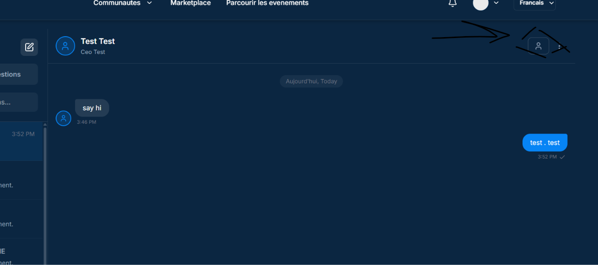
image5.png — click for original sizeFB-07 · Pending requests mark a slot Busy
Workbook row 70 · Amélioration · Priority: Critique · Status: Nouveau
le creneau affiche Busy malgre que j'ai meme pas accepter la réu
- Our interpretation
- The organizer objects to a time slot being marked Busy before the meeting is accepted.
- What the reference establishes
- The screenshot shows 15:30 marked BUSY. The screenshot alone does not reveal the underlying meeting status; the unaccepted state comes from the written remark.
- Decisions / missing details
- Agree pending-request policy: no hold, a temporary hold, or a distinct Pending state. Decide separately how participant availability and physical table capacity are reserved, and how confirmation resolves competing requests.
- Local source cross-check
- Confirmed local implementation: src/components/networking/BookMeetingModal.tsx:148-183 loads confirmed and pending meetings together and uses either to set participant conflicts. This explains the reported state, but whether it is incorrect depends on the agreed policy.
Proposed acceptance checks
- A pending request follows the agreed display and reservation policy for both people.
- Confirmation prevents double booking; decline, cancellation, expiry, and reschedule release the right slot and capacity. Test competing confirmations.
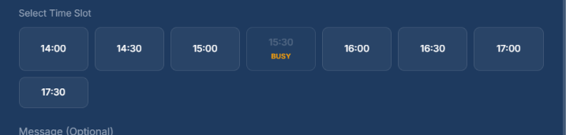
image6.png — click for original sizeFB-08 · Cancel directly without changing the meeting time
Workbook row 74 · Amélioration · Priority: Haute · Status: Nouveau
l'option de l'annulation d'une réu (pour l'annuler tu dois changer l'horaire de meeting puis l'annuler c pas un reflexe que tout l monde peut l'avoir)....
- Our interpretation
- Expose a direct, discoverable cancellation action. The user should not have to reschedule a meeting first to cancel it.
- What the reference establishes
- The written comment describes the workaround. No dedicated cancellation screenshot is supplied. The following reused Busy image is illustrative of slots, not proof of a cancellation flow.
- Decisions / missing details
- Agree actions by role and state: withdraw an outgoing pending request, decline an incoming one, and cancel a confirmed meeting. Specify who can cancel and what the other participant receives.
- Local source cross-check
- src/components/networking/UserB2BCenter.tsx:1820 currently renders the meeting-card cancel button only for pending meetings whose organizerId matches the signed-in user. Other meeting actions need review before generalizing this finding.
Proposed acceptance checks
- For each allowed role/state, cancellation is available directly from the meeting.
- No time change is required; both accounts see the resulting state, the slot is released, and the agreed notifications are delivered.
No dedicated screenshot.
FB-09 · Choose personal availability windows
Workbook row 75 · Amélioration · Priority: Haute · Status: Nouveau
la possibilite de choisir les créneaux horaires de disponibilité
- Our interpretation
- Participants want to declare the time windows when they are available for meetings.
- What the reference establishes
- A second placement of the same Busy slot image appears below the FB-08/FB-09 rows. Its visual context most closely supports availability, but it is a shared reference, not a distinct personal-availability UI.
- Decisions / missing details
- Distinguish organizer-provided event hours from participant availability. Define event-specific versus recurring availability, timezone, default state, and effects on existing requests.
- Local source cross-check
- src/components/networking/BookMeetingModal.tsx generates event slots from venueConfig.schedules. The existence and completeness of a separate participant-availability workflow has not been established.
Proposed acceptance checks
- A participant can save and edit availability within event hours, then reload and retain it.
- Other participants can request meetings only in compatible windows according to the agreed pending policy; timezone display is consistent.
image6.png — click for original sizeFB-10 · Reuse registration information during account creation
Workbook row 80 · Amélioration · Priority: Haute · Status: Nouveau
Il serait préférable de récupérer automatiquement les informations renseignées lors d l inscription afin de les réutiliser lors de la création du compte
- Our interpretation
- Avoid asking people to type again information already supplied during event registration when they create an account.
- What the reference establishes
- Text-only request. There is no dedicated account-creation screenshot; the nearby participant-card screenshot fits FB-11 semantically and must not be treated as proof of a registration problem.
- Decisions / missing details
- Specify the direction (event registration to account), fields, supported registration paths, identity matching, and overwrite precedence for existing accounts. Event answers and global profile data need an explicit field map.
- Local source cross-check
- Relevant entry points include src/pages/32_Event_Registration_Flow.tsx, src/components/modals/ModalProfileSetup.tsx, and authentication flows. The profile-setup component initializes several fields empty, but the full handoff requires tracing before asserting a root cause.
Proposed acceptance checks
- Complete registration then account creation for the same verified person; mapped fields are prefilled and editable.
- Existing nonempty account data follows the agreed precedence, unrelated identities are not linked, and refresh/retry does not duplicate records.
No dedicated screenshot.
FB-11 · Navigate from a person to their business profile
Workbook row 81 · Amélioration · Priority: Haute · Status: Nouveau
L'ajout d l option de view profil business
- Our interpretation
- Likely request: add a View business profile action from a participant card and/or personal profile.
- What the reference establishes
- Nearby images show participant cards with company text and View Profile actions, and an individual profile with a company name plus meeting/message actions. Neither shows an explicit View business profile button.
- Decisions / missing details
- Confirm placement: participant cards, personal profile, or both. A company-name string alone does not establish a valid business-profile association; define which business is shown when there are several.
- Local source cross-check
- src/pages/EventSectionPage.tsx and src/pages/PublicProfilePage.tsx are candidate personal-profile surfaces; src/components/business/BusinessProfilePage.tsx is the business destination. Exact desired placements remain to be confirmed.
Proposed acceptance checks
- A person with a linked business can open the correct company profile from the agreed surfaces.
- Missing, multiple, or inaccessible business links are handled explicitly without guessed company-name matches.
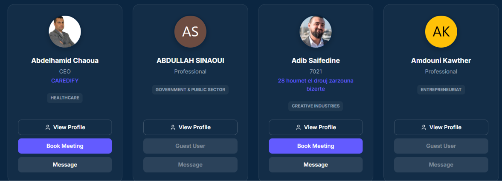
image12.png — click for original sizeimage1.png — click for original sizeFB-12 · Navigate from a business to a person's profile
Workbook row 94 · Amélioration · Priority: Haute · Status: Nouveau
L'ajout d l option de view profil ds le profil business
- Our interpretation
- Add a View profile action inside a business profile, likely for the owner, representative, or listed team members.
- What the reference establishes
- The business-page screenshot shows company information, Notre equipe, Nos offres, and contact/matchmaking panels. The visible team section does not identify a specific person or placement for the requested action.
- Decisions / missing details
- Identify whose profile should open: company owner, primary representative, team members, or the signed-in user's public preview. Do not collapse this request into FB-11; its navigation direction is reversed.
- Local source cross-check
- src/components/business/BusinessProfilePage.tsx loads owner_profile_id and business_members. Those relationships can inform the implementation after the requested target is confirmed.
Proposed acceptance checks
- The business page exposes the agreed person/team profile links and each resolves to the intended account.
- Empty teams, missing/deactivated people, and access restrictions produce clear states.
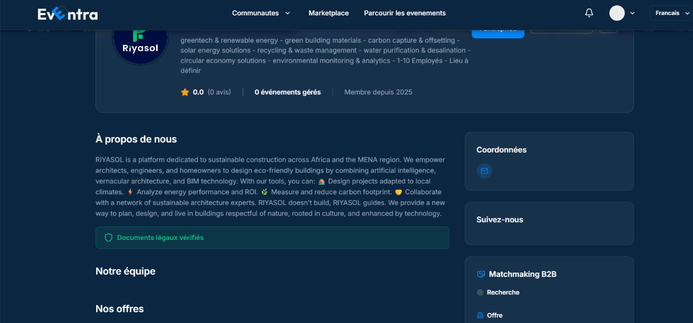
image8.png — click for original size